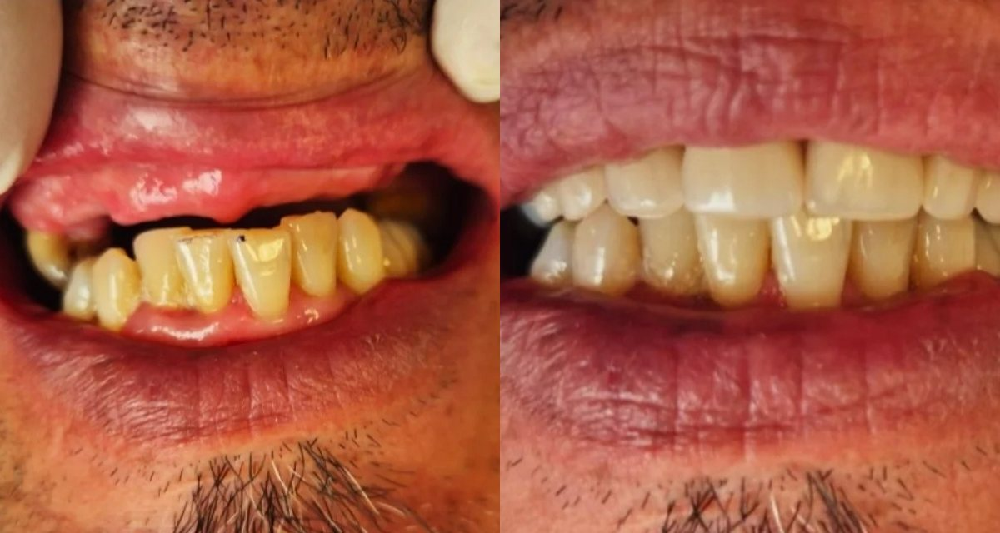
Prótesis superior
Recuperó los dientes del frente y la mordida.
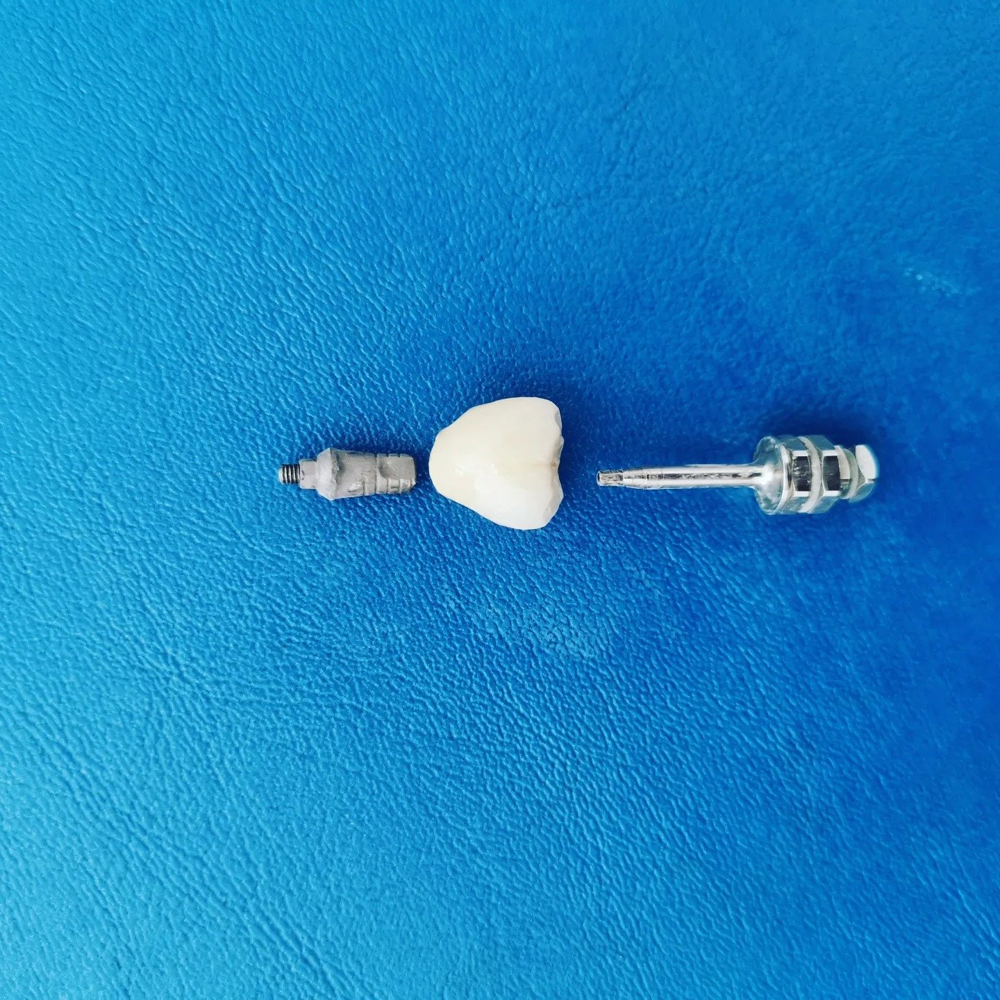
Valoración completa y todas las especialidades en un solo consultorio, con el Dr. Julián Sánchez en el C.C. Laguna, local 26. Abierto todos los días.
Agenda tu valoración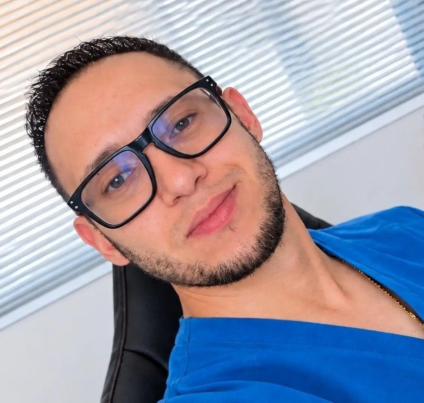
Antes de proponerte un tratamiento, el Dr. Julián David Sánchez Aguilera revisa dientes, encías y mordida, y te explica cada opción y su costo con claridad y paciencia.
Odontología general y especializada en un solo lugar: periodoncia con la Dra. Katherine Méndez y cirugía con el Dr. Durán, cirujano maxilofacial. No tienes que ir de consultorio en consultorio.
Revisión de dientes, encías y mordida, y un plan explicado paso a paso, con su costo.
Carillas y coronas planeadas sobre tu cara, tus labios y tu forma de sonreír.
Aclaramiento dental en el consultorio, con limpieza previa y protección de encías.
Brackets para alinear tus dientes y mejorar la mordida, con controles cada mes.
Pilar y corona sobre implante para reemplazar el diente que falta, como en la foto del inicio.
Coronas fijas hechas a la medida de tu boca, con forma y color natural.
Tratamiento de conducto para quitar el dolor y conservar tu diente natural.
Encías sanas con la Dra. Katherine Méndez, periodoncista aliada.
Extracciones y cirugía de cordales con el Dr. Durán, cirujano maxilofacial.
Prótesis parciales y totales para volver a masticar, y limpieza profesional.
Diez tratamientos, y todos empiezan igual: con una valoración. Elige el tuyo y agenda
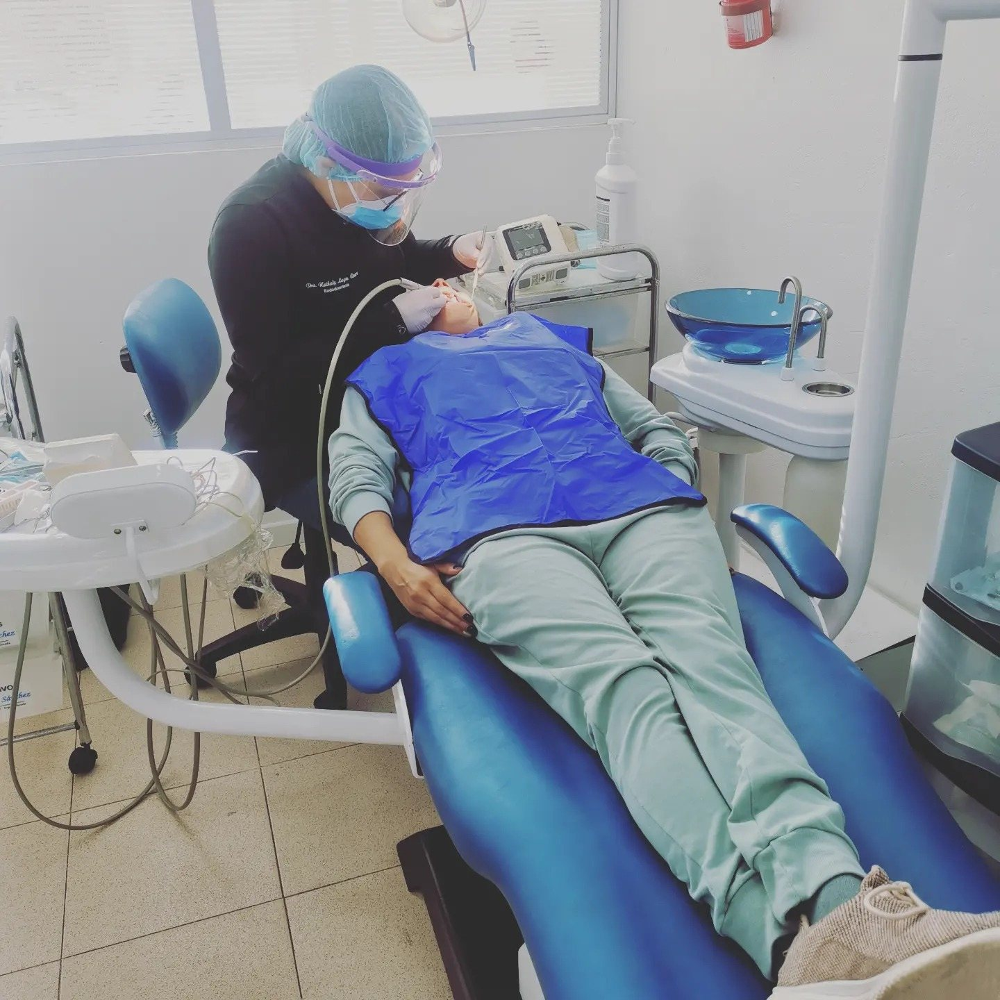
Revisión completa y un plan explicado con claridad, con tiempos y costos.
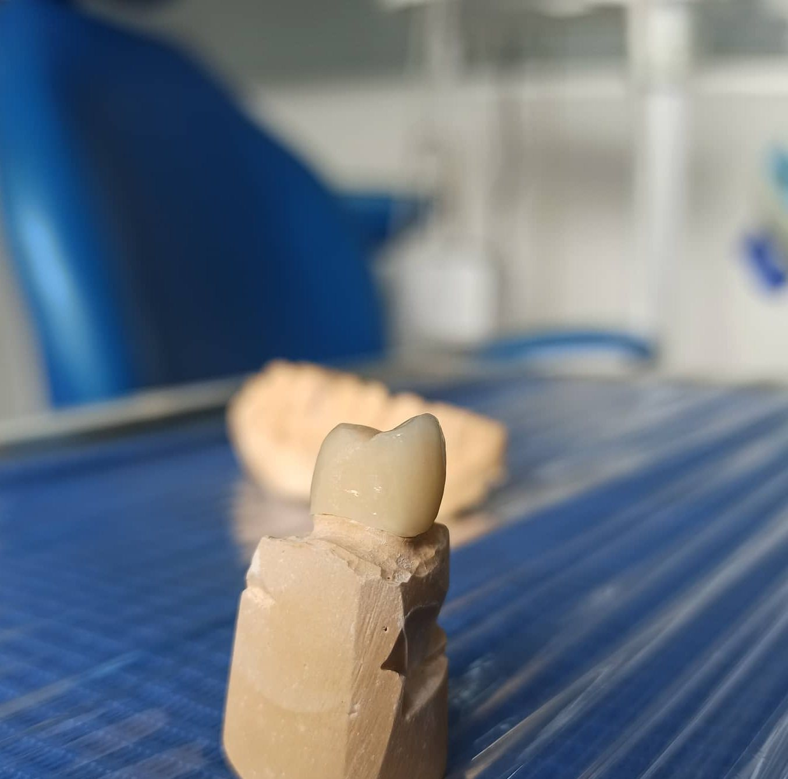
Coronas y prótesis hechas para tu boca, con forma y color natural.
Un equipo puntual y protocolos de bioseguridad en cada cita.
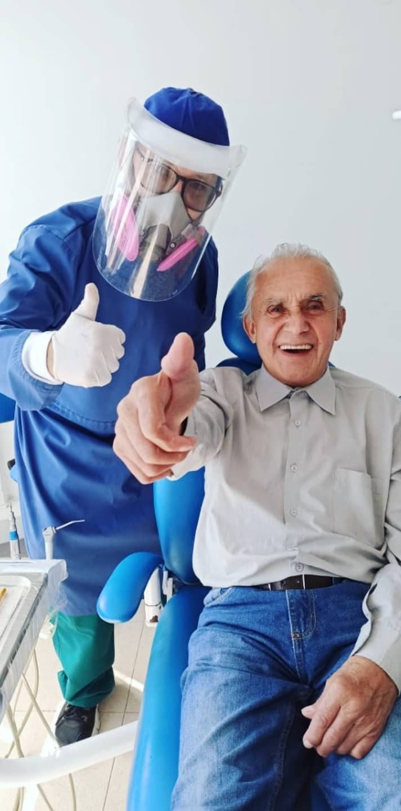
Te acompañamos en cada control hasta ver el resultado.
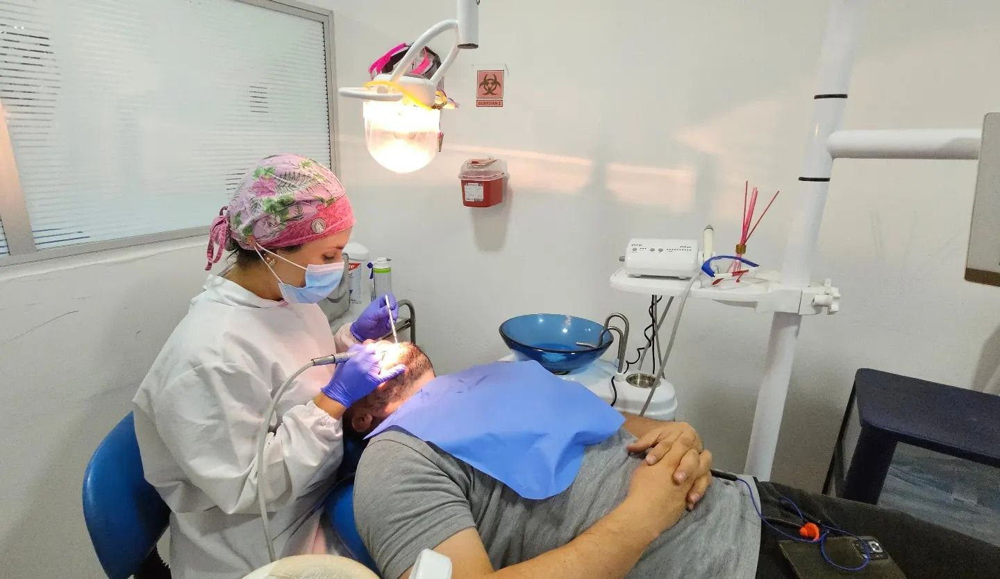

Recuperó los dientes del frente y la mordida.
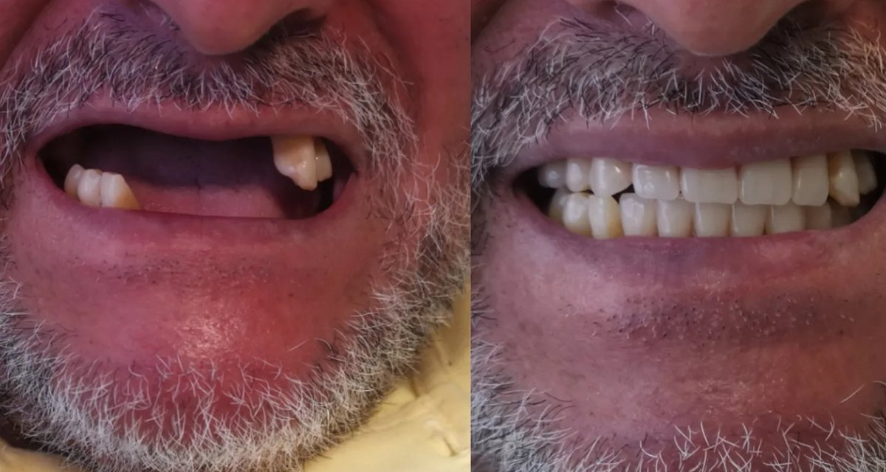
Espacios cerrados con una prótesis que no se nota al sonreír.
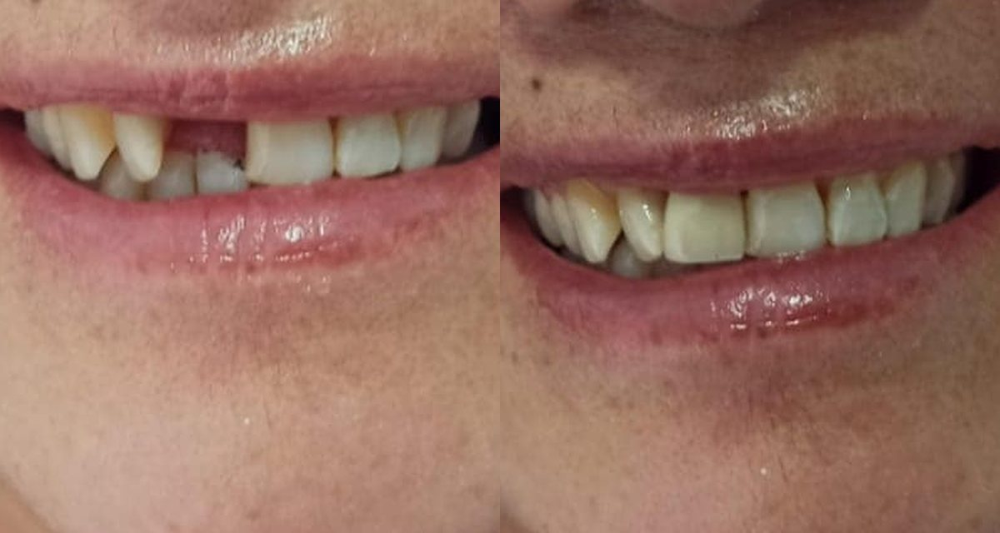
El incisivo que faltaba, en el mismo tono de los demás.
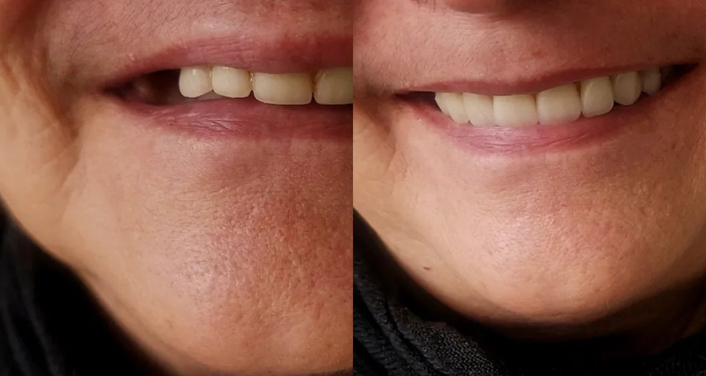
Los espacios del frente, cerrados con naturalidad.
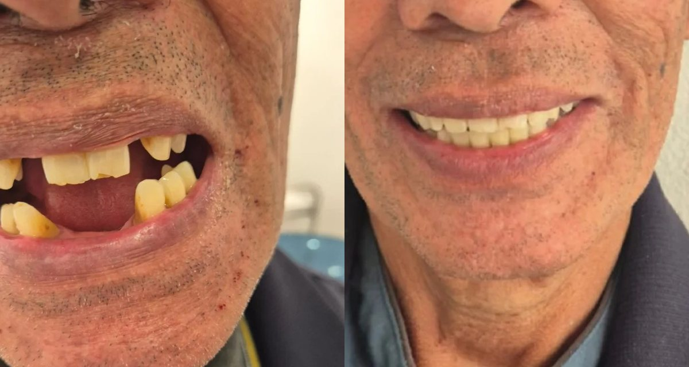
Rehabilitación oral para volver a sonreír sin pena.
“Sin duda,mi
clínicadeconfianza
a partirde ahora”
“Hace poco me realizaron la cirugía para la extracción de las 4 cordales, tuve una buena recuperación y lo recomiendo totalmente.”
Lorena Gómez“Al ser un servicio de odontología integral te explican con claridad el tratamiento a seguir y los costos.”
Erika Gutiérrez“Te explican cada proceso con claridad; son puntuales, organizados y sus precios asequibles.”
Sandra ReyesImplante o prótesis
Revisamos tu caso y te proponemos un implante con corona o una prótesis fija o removible, con su costo.
Te atiende: Dr. Julián Sánchez, con cirujano maxilofacial si hace falta
Hola Dr. Julián, me falta un diente y quiero saber si me sirve un implante. Me gustaría una valoración en el C.C. Laguna, entre semana en la mañana.
Enviar por WhatsAppEn la valoración revisamos tu caso y te explicamos el tratamiento y su costo antes de empezar, para que decidas sin sorpresas.
Trabajamos con anestesia local y te explicamos cada paso antes de hacerlo, para que estés tranquilo durante toda la cita.
Sí. De lunes a sábado de 9:00 a. m. a 7:00 p. m. y los domingos de 9:00 a. m. a 5:00 p. m.
Sí. Periodoncia con la Dra. Katherine Méndez y cirugía oral y de cordales con el Dr. Durán, cirujano maxilofacial, en el mismo consultorio.
Depende del hueso de cada persona. En la valoración revisamos tu caso y te damos los tiempos de tu tratamiento.
Sí. Es de lo que más destacan los pacientes en Google: un consultorio limpio, ordenado y con todos los protocolos de bioseguridad.
En el Centro Comercial Laguna, local 26 (Carrera 122D #129B-90), en Suba, Bogotá.
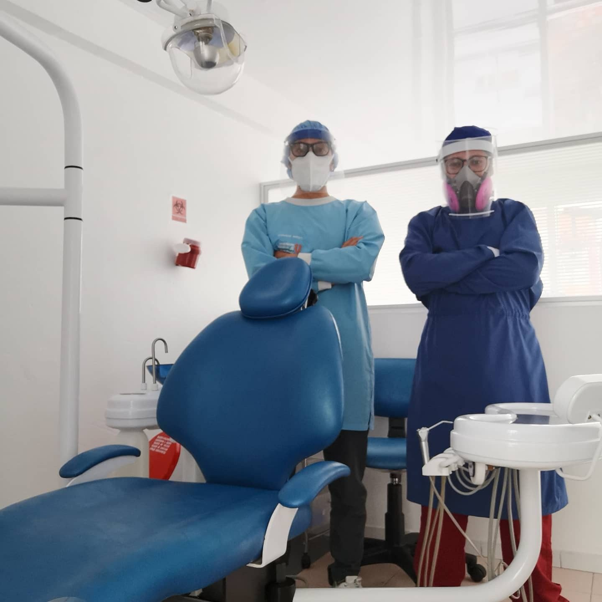
Lun a sáb 9–7Dom 9–5
350 708 3018WhatsApp Escríbele por WhatsAppConsultorio Odontológico Dr. Julián Sánchez · 5,0 en Google con 12 opiniones · Abierto todos los días